Order Hang Tags — Refactor
An end-to-end redesign that streamlines how brands and garment manufacturers order LYCRA® branded hang tags

Overview
How the system works
A LYCRA® hang tag is the branded label attached to finished garments (by brands like Lululemon or Under Armour) that certifies the fabric contains genuine LYCRA® fiber. To order them, a customer needs a Fast Track Code (FTC), which proves their fabric was tested and approved.

Most brands arrive with a code from their certified mill; fewer receive an FTC after completing the fabric-testing flow themselves.
The Problem
Order Hang Tags was the most-used flow on the LYCRA ONE™ portal, yet it made users fight the system for every order. That combination of high volume and high friction is what secured the budget and made this a priority. Senior stakeholders consistently heard the same frustration from brands looking to place routine orders.
As the sole UX/UI designer, my challenge was to redesign the experience within strict technical constraints—condensing the flow from 7 steps to 5 and eliminating friction at each step.
The legacy flow
Discovery and research
The legacy flow ran 7 interface steps across 8 separate page loads. At about 6 seconds per load, the page transitions alone added nearly 1-minute of waiting to a routine order.
Testing with no budget
With no budget for formal usability testing, I ran guerrilla usability sessions with 4 participants using realistic test data: a sample Fast Track Code, purchase quantities, dispersion figures, a shipping address, and shipping method. I timed each session and noted where users got lost. Since these weren't real brand clients, I used their feedback to diagnose layout and flow issues rather than to evaluate any industry-specific details.
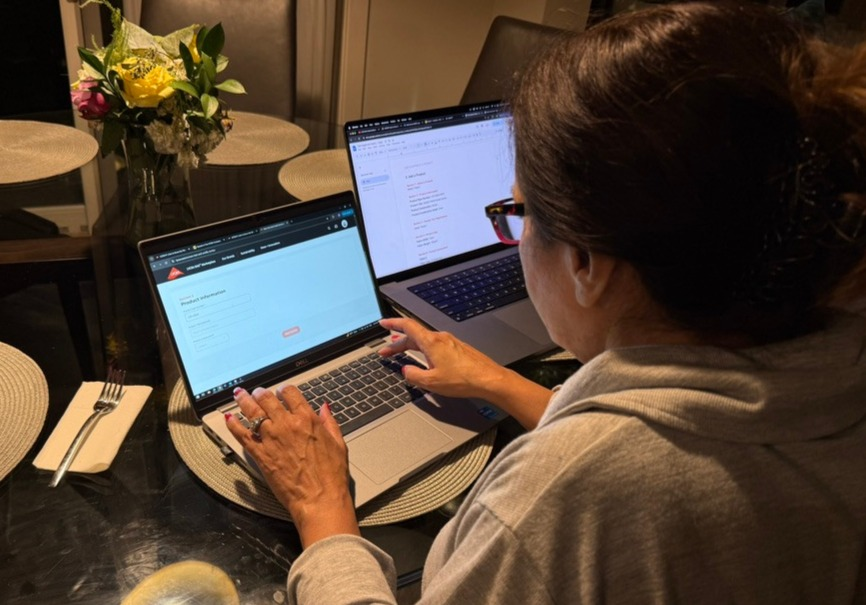
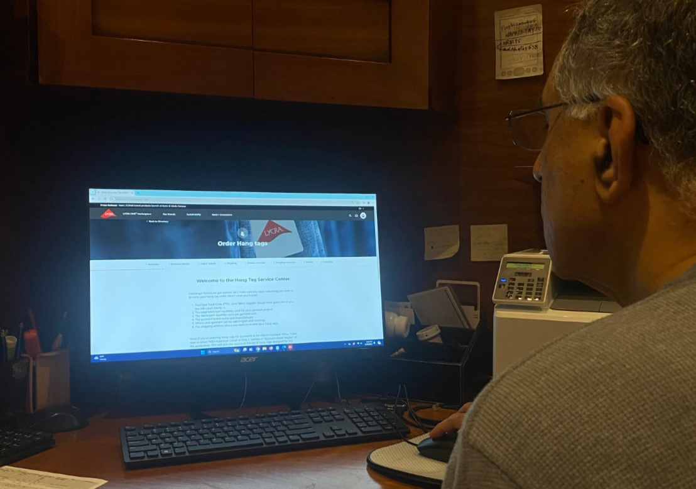
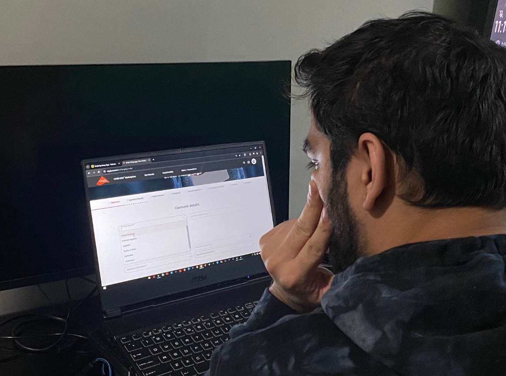
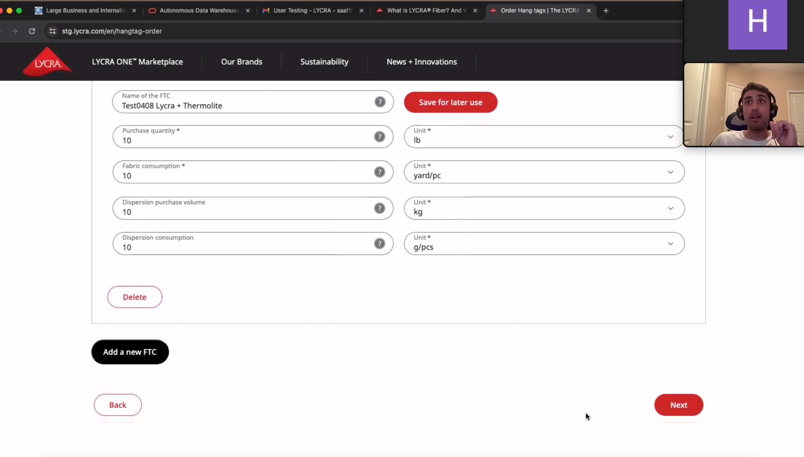
What I found
Hidden field dependencies
Garment Segment and Garment Product Type were not visibly connected, so users did not know one depended on the other.
Delayed validation
Errors surfaced only after a full page reload, so users discovered mistakes after a six-second wait.
Conflicting shipping options
Multiple shipping options could both be selected. Users chose “Free Shipping” alongside a paid carrier, or even when their address did not qualify.
Dead-end tag eligibility
Available tags depend on criteria entered across several steps. Users could complete the whole flow only to reach the end and find no tags matched their combination.
The diagnosis
The legacy flow failed in 2 fundamental ways:
1State management
Fields didn't communicate with each other, which let users make conflicting choices.
2Feedback timing
The system only surfaced errors after a painful six-second reload, instead of catching them in the moment.
Design & solution
The redesign reduced 7 steps to 5 and rebuilt every step visually and structurally.
The single biggest constraint
The platform couldn't save progress, so orders had to be completed all in one-go. If a user closed the tab, timed out, or stepped away to track down a spec sheet, the order was gone and users were forced to restart from step one. Supporting save-and-resume meant rebuilding the backend, which was out of scope.
The design challenge was how to make the single-session flow more feasible and forgiving, while making it fast enough to actually complete in one sitting.
- The Welcome popup front-loads requirements so users gather everything before starting.
- Saved FTC and saved address lists minimize the chance a user has to stop, leave, and lose their session.
- Preserving back-navigation (from the legacy experience) and in-session editing means a mistake on an earlier step is not fatal.
The messy thinking
The consolidation was not a solo exercise. Over several months, Enrique (business requirements), Sohail (CMS and data constraints), and I worked through every step on a shared Miro board. Each page went through several revisions before the structure settled. The annotated boards shown in this section show the working process that led to the redesign of each step.
7 steps, cut down to 5
2 consolidations drove the reduction, each removing a full page load on a six-second backend and simplifying information input.
Step 0 / 1 — Welcome & Fabric Details
The flow was reordered to open with Fabric Details/ FTC. In the legacy experience, Garment Details came first, yet the Fast Track Code (the requirement that gates the entire order) sat 2 steps back in Fabric Details. Without it, the backend can't recall the certified fabric. Leading with Fabric Details puts that dependency first.
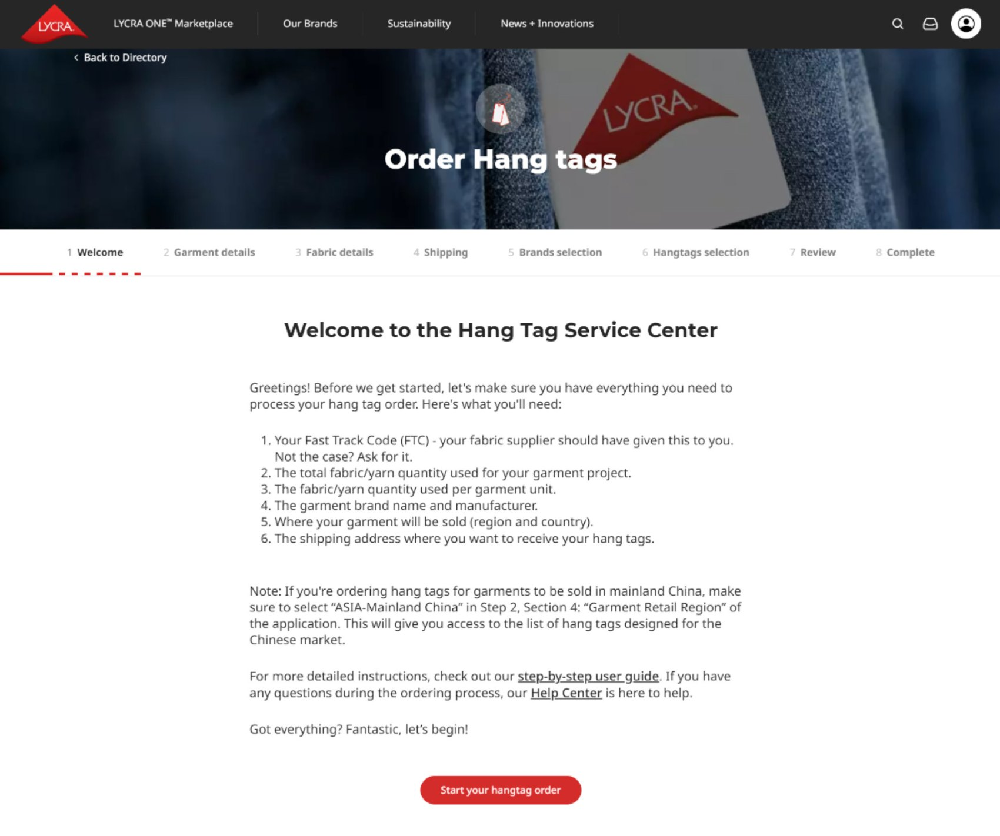
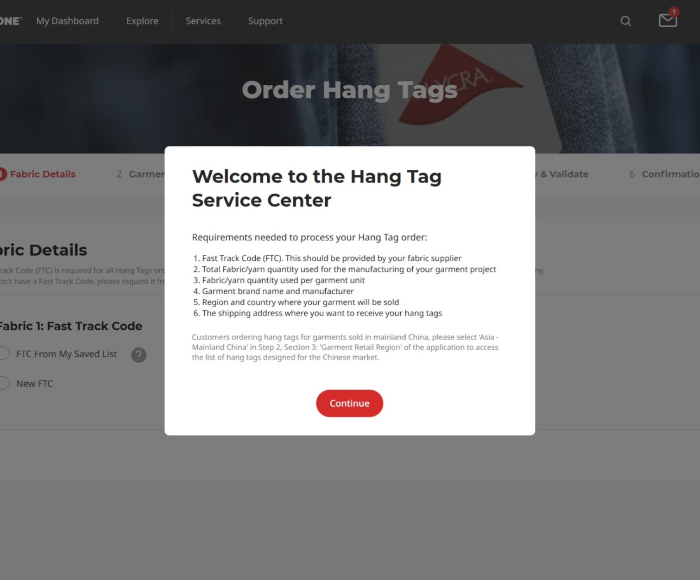
Cut the page-load tax
The flow opened on a static Welcome screen that gathered no input. The same instructions were moved into a popup over the first input screen. Hit "Continue" and you're already on Step 1.
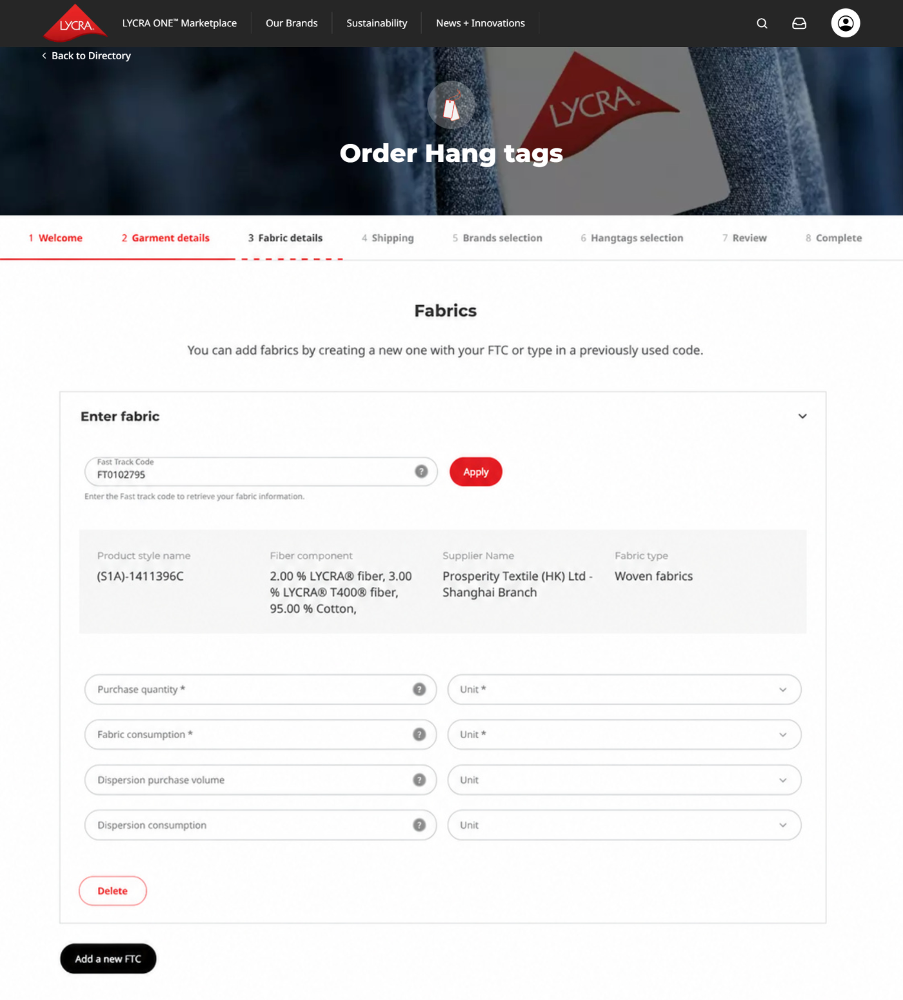
Recognition over recall
Our users were overwhelmingly repeat customers, reordering against codes they'd used many times. Yet the legacy page gave them no way to see a prior code. The only viable path was to retype the full 7-character code and press Apply. This added unnecessary cognitive load on users.
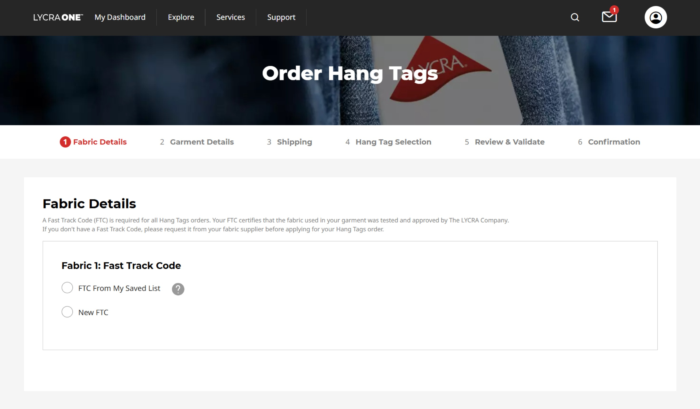
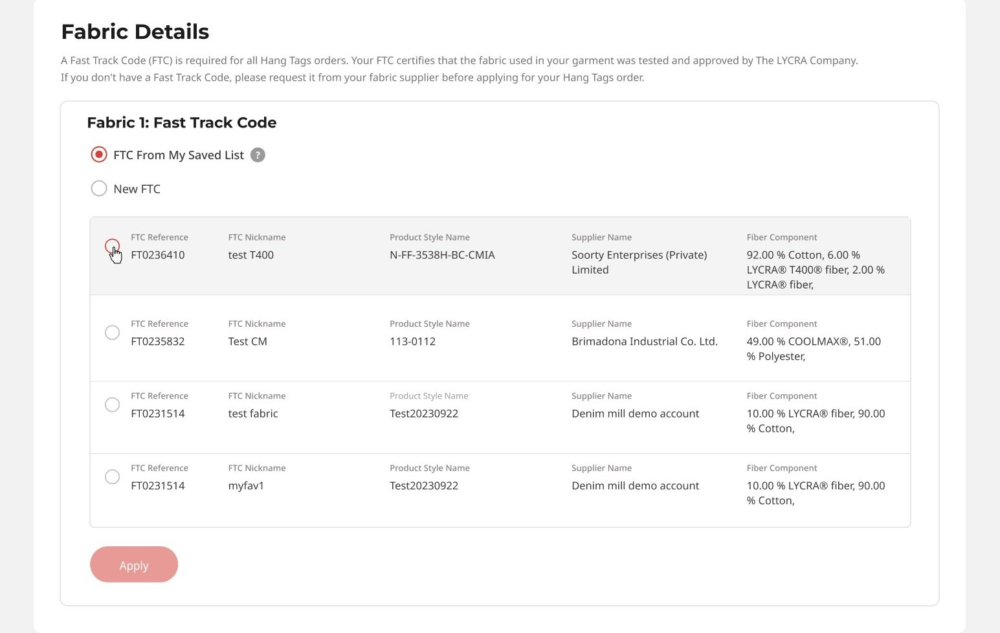
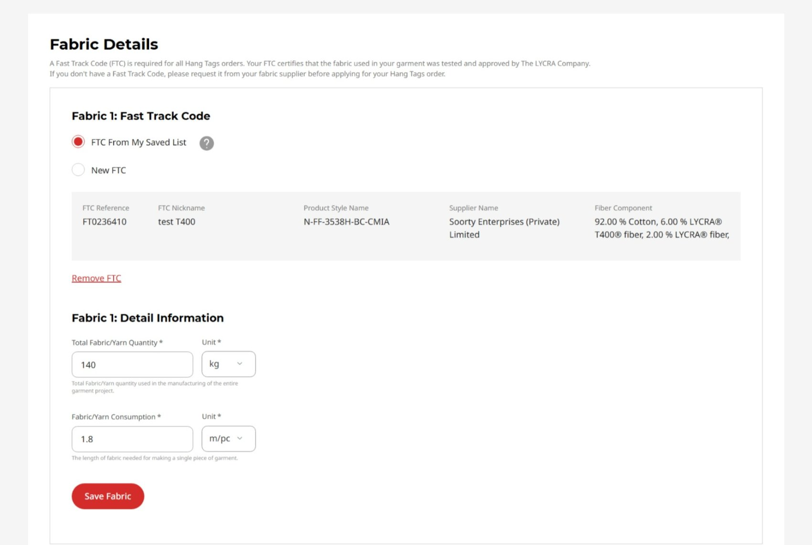
Fabric details are still required
Selecting a saved code doesn't skip the fabric fields: The FTC proves the fabric qualifies, but not how it's used in this order. The fabric details (purchase quantity, consumption per garment) are what tie the certified fabric to the actual order, and the portal needs them before it can produce a tag.
The gating requirement is confronted first, so users without a code find out before investing effort. And the repeat user lands straight on the fastest path to their most common action: recognizing and selecting a saved code instead of recalling and retyping one.
Step 2 — Garment Details
The Garment Details screen presented every field in a single undifferentiated block and gave no indication that fields were related. 3 of 4 test users did not realize Product Type options depended on the Garment Segment selected previously.
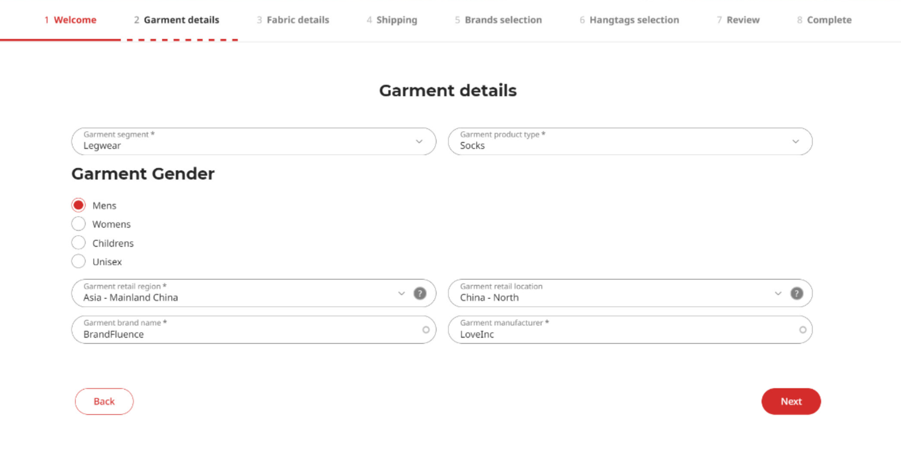
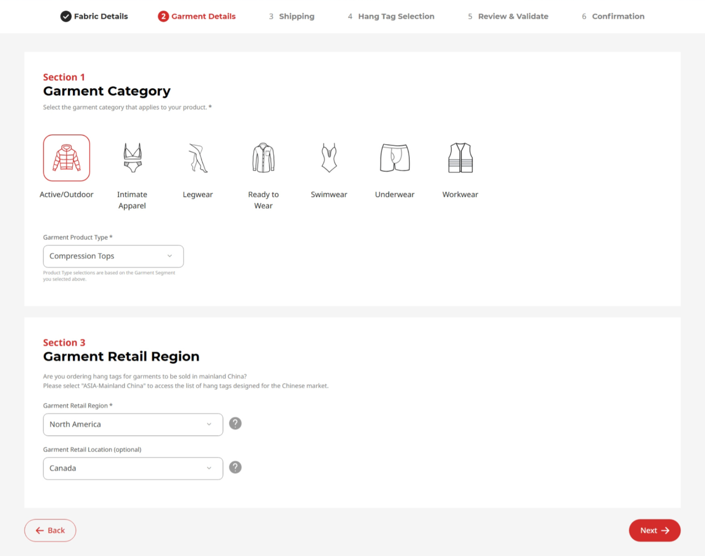
The thinking
I worked this step from the real data model: garment taxonomy spreadsheets sat beside the screens on the board, an engineering constraint on character limits was captured directly in the working notes, and the terminology shift from “Segment” to “Category” was decided live. The dependent-field behavior was genuinely collaborative; my early designs went through real back-and-forth with Enrique and Sohail, who pushed on how the dependencies should work and suggested ways to make them more efficient and logical from a systems and data standpoint. The final behavior reflects that input, not just my first draft.
The redesign
The screen was restructured into 3 clear sections, the segment dropdown was replaced with a scannable icon-based category selector, and explicit microcopy (“Product Type selections are based on the Garment Segment you selected above”) made the dependency obvious. Product Type options also filter live based on the selected segment, so users only see relevant choices.
Sectioning chunks a previously flat, dense screen into digestible groups. The icon selector is faster to scan than a dropdown (recognition over recall again). And the field dependency that confused three of four testers is now explicit in both copy and live behavior.
Step 3 — Shipping
Legacy
In testing, users made 2 kinds of shipping errors. Some selected “Free Shipping” alongside a paid carrier. Others selected free shipping when their address did not qualify, and only discovered the error after a reload. Both shared a root cause: the legacy screen showed every option at all times and used a checkbox for free shipping, so it could coexist with carrier selections.
The thinking
The board maps both the “from saved list” and “new address” paths, and debates whether the new courier/carrier entry should be a popup or an inline expanded section.
The redesign
I rebuilt shipping so the interface only ever presents valid, non-conflicting choices:
- Shipping method became a single radio group, making “Standard Shipping (Free)” and a paid carrier mutually exclusive. Selecting both is no longer possible.
- “Standard Shipping (Free)” renders conditionally, appearing only when the address selected in Section 1 qualifies for free local delivery. Users with ineligible addresses never see the option, so they cannot select it and cannot get bounced back.
The errors my testers hit are not validated against after the fact; they are structurally impossible, because invalid choices are never presented. This is the strongest form of error prevention: making the bad state unreachable.
Step 4 — Hang Tag Selection
Legacy
The flow split brand selection and hang tag selection across 2 separate pages, with the relationship between them invisible. A user picked a brand, waited through a reload, and saw a list of tags with no visible connection to the choice they had just made.
The thinking
On the working board I added a custom-hang-tag passcode gate (a Yes/No question that reveals the passcode field only when needed, a 5th instance of conditional disclosure) and worked out how the tag list should respond dynamically to the brand chosen above it.
The redesign
I merged the 2 pages into a single step with 2 sections: Select Brand, then Select Hang Tags, where the available tags populate based on the brand chosen above. This removed a page load and made the dependency legible: the user can see that their tag options are a direct result of their brand selection.
Every choice a user makes conditionally shapes what they see next, and the UI makes that cause-and-effect obvious (Selecting a saved FTC, address to free shipping, segment to product type, brand to hang tags, and the custom-tag passcode gate).
Step 5 — Review & Validate, Step 6 — Confirmation
Legacy
The legacy Review step hid shipping details behind dropdowns and treated the confirmation email as the order record: the confirmation page literally instructed users to print the email and mail it in with their fabric sample.
The thinking
On the Review & Validate board, sticky notes capture 3 deliberate decisions: shipping information should be clearly visible on page load (no dropdown), a document-upload affordance should encourage attachments, and a feedback module should be added to understand what could be improved. That feedback-module decision is the origin of this project's headline metric.
The redesign
The Review step kept its core structure as a final summary before submission, but I improved scannability by surfacing shipping details on page load, clarified the optional document upload, and consolidated the confirmation into a single clear action. The Confirmation page was modernized with a clear “Next Steps” block and status communication, replacing the legacy “print and mail” instruction with a reassuring overview of what happens next. The on-screen confirmation now carries the full order record, rather than pushing users to the email. The step navigation also marks completed steps with checkmarks, so progress is always visible.
Shipping is legible at a glance, the order record lives on the page itself, next steps are clear and reassuring, and the embedded feedback module turned the final screen into an instrument for measuring the redesign's success.
Impact
Faster completion
Directional test, 7:48 → 4:15
Steps reduced
Streamlined from 7 steps to 5
Positive feedback
Among 623 post-launch responses
Responses
Post-launch, collected over 8 months
The redesigned flow launched in July 2024. I validated it 3 ways.
1 · Task efficiency (directional)
I re-ran the identical moderated protocol with the same 4 participants on the new flow. Average completion time dropped from 7:48 to 4:15, a reduction of roughly 45%. Just as importantly, they no longer got stuck on the friction points that had tripped them up on the legacy version. Same participants, same protocol, measured before and after. Small sample, so I treat the time figure as directional, but the direction was strong and the friction points were verifiably resolved.
This reduction reflects 2 improvements landing together. The redesign cut the flow from 7 steps to 5 and optimized each step in the process, while the development team also optimized code to reduce page load times. I do not attribute the full reduction to design alone, but the structural simplification was a direct driver.
2 · User satisfaction (strong sample)
I built an optional feedback module into the post-submission confirmation page (Good / Neutral / Poor, plus an open comment), which the CI&T team wired to a spreadsheet. Over 8 months it collected 623 responses: 548 Good, 58 Neutral, 17 Poor, which is 88% positive. Because the survey appeared after submission, respondents had all completed an order, so the sample is self-selected and skews positive, which I weigh when interpreting the result.
3 · Qualitative themes
The open-text comments mapped directly onto what I redesigned: speed, simplicity, and the streamlined ordering process. The strongest comments:
Fast, simple, and easy to use, a great experience.
The new system is smooth, intuitive, and done in one go.
The ease of ordering they implemented is fantastic.
Recurring positive themes across the open-text feedback:
- Improved speed and efficiency of the system.
- A simpler, more intuitive, more user-friendly ordering process.
- Customer service praised for professionalism, clarity, and responsiveness.
- A smooth experience with clear instructions and fast processing.
- Quick select-and-submit of hang tag details called out as a major plus.
Likely business impact
I want to be careful here, because I did not have access to support-ticket or fulfillment data, so I cannot put a number on this. But it is worth stating the plausible business value. This was the portal's highest-volume flow, so cutting task time and making invalid or conflicting orders structurally impossible most likely reduced downstream load: fewer abandoned orders, fewer support contacts from stuck users, and fewer incorrectly specified tag orders reaching fulfillment. I am framing that as a reasonable expectation rather than a measured result, because the data to confirm it sat outside what I could see.
An honest read on the data
A satisfaction number that high is only trustworthy if you also show what people complained about, and separating the friction I owned from the friction I didn't is part of reading the data honestly. So I categorized every open-text complaint by theme and frequency, with a note on whether each falls inside my redesigned flow or in the broader portal.
| Pain point theme | Mentions | Responsibility |
|---|---|---|
| File upload failures & slow speed | 10 | Outside my flow |
| Login & password issues | 7 | Outside my flow |
| Order modification & form changes | 6 | Partly mine |
| Webpage performance | 6 | Outside my flow |
| Address selection & saved data | 5 | Partly mine |
| Customer support responsiveness | 4 | Outside my flow |
| Limited language support | 2 | Outside my flow |
5 of the 7 themes sit entirely outside the flow I redesigned (login, file uploads, page performance, support responsiveness, language support). The ordering flow still earned 88% positive feedback while users were dealing with those broader portal issues.
The 2 themes I marked Partly mine deserve an honest word on why. Order modification refers to editing an order after it was submitted, which was a backend and order-management limitation, not something my flow design controlled (within the flow, users could already edit freely). Address selection and saved data is the fairer hit: some users still found picking and reusing a saved address more friction than it should have been, and if I ran this again it is the first interaction I would usability-test specifically. I am claiming the part I owned and not the part I didn't.
Reflection & next steps
What I'd carry forward
Product next step
Within the flow, users could freely navigate back and edit any step before submitting. The “cannot edit after submission” feedback refers to modifying an order once it had already been submitted and entered processing, a post-submission order-management capability outside this flow's scope. It is the clearest candidate for future work: a way to amend or cancel a submitted order without contacting support.
What I learned
Some constraints simply exist, and good design works within them. Save-and-resume was the one thing testers would have valued most, and the one thing I could not give them: it meant rebuilding the backend, which this project could not absorb. Rather than fight the constraint, I spent the effort making it painless — front-loading requirements, saved lists, forgiving in-session editing. The same logic applied to scope: the brand logos on Hang Tag Selection bothered me every time I opened the file, but they worked, and those hours mattered more elsewhere. Knowing when not to redesign something is its own design decision.
Align on scope with every team before designing, not midway through. A Garment Retail Region section was not in the original scope, but the team that operates the Salesforce data told us it would be genuinely useful. Adding it late cost the developers avoidable hours. I now treat upfront alignment across every relevant function as part of discovery.